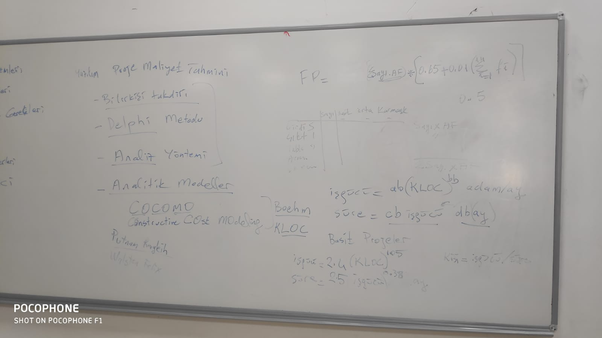

Software Project Management
Puanlama
| tip | oran |
|---|---|
| Ara sinav | 30 |
| Proje | 25 |
| odev | 5 |
| final | 40 |
Ders Notları
08.10.2019
for project success we need to check three thingstime to accure the best quality:
- budget
- requirements (scope)
- time
Software proeject management we need to chekc three things as well :
3P (Sofware develeopment model )
- problem
- proccess
- peopele
- what kind of people we have: proejct manager, software analyst, softwarere negineering, database and * network.
- product
- ERP or Operating system software and what kind of sotware we need.
Project managment raod-map ==> step by step
- understanding the proejct
- background
- the palyer -> clients priorities : time budget requirements
- defning the project
- project deliverable
- proejct scope
- review? approved
- client team? --> user, sponsor,
- planning the porject
- lists porject activities
- dependecy between activities
- estiamate time, effort
- assigned resources (hardware, software, effort, pepole)
- Project schedule ==> examples like grant diagram, pert and MS-Project
- team orgnisation
- quality plan
- risk plan
- running the proejct
- closing the proejct She draw spiral model Bring it from google
Work breakdown structure
- Prortype:
- customer (#@$)
- planning
- risk
- desgin
- construct
- customer
- product
- C
- P
- RA
- D
- C
- C
- Advanced prdouct
- Stuff will be used here as well
- MAinaiatnes
information system project management jolyon hallow book.
- Project deliverable
- planning
- project plan
- Statement of work (SOW)
- cost benifits
- project schedule
- Budget
- Desgin
- data model
- process model
- data dictionary
- bsuiness rules
- question deilverablity
- Developments/implemenation
- code, unit test, plan, report , intgeritiy ,system
- training plan
- planning
Pay Back --> after what time and what can we do ,2 years net preenst value .
15.10.2019
Change request Form (note that she is reading from the book reading the book is much better than just listening to her) The form strucutre will have the next details:
- date
- Project manager
- requested by
- description of change
- impact on
- project
- schedule
- costs
- resption
- date required
- data
- approved/rejected project Scope Change.
Planning:
- proejct assumention and constiaints
- project activities ]
- connection between activities
- STart finishL start>>>fnish --> show on grant diagram.
- finish start:
- finish finish
- start start (gantt diagram)
Sure ve islem (ag analizleri) pert Project evaluation and review teq. CPM ctricila path methods -- log time
Water fall project activites(WBS - work break down structure)
- PLannng
- reguirements analysing
- collecting data
- modeling
- documenting SRS
- desgin
- Geeneral desgin
- detaield desgin
- database desgin
- interface desgin
- result/report desgin
- process desgin
- implementing
- coding
- creating database
- test
- engineering test
- user test
- birim test
- butenelmeme testi
- sistem test
- kullnici testi
LAg time = activity time : best case, worst case, average case
22.10.2019
Project planning
- Kabul ve kisitlar
- projedeki aktiveteler listesi
- aktivitlere arasindaki baglilik : finish start- start strart - finish finish (bir is baslayip ikiknisi baslar, ayni zamanda baslamasi, bitmesi , )
- En optimum yol, CPM Pert
- Gant diyagrami ile yapilir
- gereken is gucu (her bir aktivite icin) toplam isgucu
- Goreb tipi :
- L.A.
- S.A
- P.Y.
- DW
- Goreb tipi :
- gorev atama (assıgnıng and leveleıng resources * kaynak)
- Butce
- SLack Time
- Risk planlama (risk yontemi)
- Ekip yonetimi
- Kalite plani/planlama
- Gereken sure
- aligning the schedule
- sure mutlak mi? ek sure?
- segement into release
- reduce functionality
- additional stuff
- subconstracting
- aligning the schedule
- Risk yonetimi:
- risk belirleme
- risk planlama
- risk izleme
- risk raporlama
- Risk tipler
- perosnal riski
- isten ayrilma
- zaman ayirmama
- plana gore (calisan yeresizligi)
- yetenek ekiskligi
- egitim eksikligi
- isletemcilik riski
- dagitim teslim tarihi
- ilisikili projeler
- musteri riski
- eski musteri mi?
- reviews suresi
- surec riski
- yazilim gelistirme adimlari
- yeni surec tanimi
- Yazilim Muhendisligi standartlari
- gelistirme ortami ve altyapi
- genel riskler
- perosnal riski
Risk tablosu: rsik tanimi, risik tipi, olasilik, etkisi, onemi Rısk tanımıö onnemı öonlemı, maliyeti.
Risk plan tema: risk izleme milestrones risk izleme ekibi
On inceleme ve feasibility : WBS (work braek down structure) Waterflow, sprial
05.11.2019
P.M road map
- understanding
- defining
- planing --> project planning
- running
- closing
Project planning:
- proect assumptions and constrians
- Software development model
- activities :
- requeirmenet analysis
- desgin
- implementiaion
- test
- WBS
- Dependecies between activicites
- FF (f = finish , s = start)
- FS
- SS
- Estimapte of work required
- R.A.
- adam/ny effort
- desgin efofrt
- implementation effort
- coding, database effeort
- Totoal Adam/ny
PERT - project eveletuion and R techniguqes Gantt
Pert Gant - time, work , assign resources : SE , people --> leveling Milestones
waterfall - based on them? budget?
Risk planning
- staff (people) risks
- Equipment
- Clinet risks
- Scope risks
- Technolgoy risks
- Physical risks
Example of risk table:
| Risk | Category | proablity | Impace | Degree (impact* probality) |
|---|---|---|---|---|
Quality planning
Standard
Review
inspection
version control
continue
orgnisations communication
confguration managment
= project running, closing the difference? write a report of project and what happened
Proje nedir
proje yonteimi nedir,
onemli konular
17.11.2019
Seflik sistemi Demokratik sistemi Hirasik ekip
Proje yoneticisi: Destek Sistem analisleri yazilim gelistirici Test ekip
fonkisyonel proje ekibi
26.11.2019
Kaliteli yazilim saglamak
- Standart
- yazilim gelistirme surec modeli
- sertfikali ekib
- gozden gecirme review
- inspection - inceleme
- test
- yazilim olcumu
- SCM
- SRM
SPICE Capability Maturity Model Integration (CMMI) (KPA , Key process area)
- Baslangic
- Managed
- Proje plan Gereksinim nalaizi
- yazilim kongrasyon yonetimi
- tasarim belgesi
- Defined
- kurumsal yapida proje yonetimi
- risk yonetimi
- gereksinim yontetimi
- quatnitfiy managed
- saysial proje yonetimi
- optimizify
- feedback
- yaraticilik
- yonilik People CMM
Software metrics
Software metrics Büyüklük
- Line of code (satır sayısı) kloc loc, k = öne thousand
- FP Tasarım
- Algoritma karmaşıklığı
- Nesne yönelik yaklaşımı 7 ölçüm birimi var
- Ck. Metrics (chidamber-kemerrer)
- Döngüsel karmaşık (cyclomatic complexity) (mcCabe)
Etkin programlama kuralları
Program içindeki
Kalite faktörleri mcCall
Hesaplanma arifmetikleri işlem yoğunluğu Halstead
03.12.2019
Yönetim kalite sistemi
- Formal yontem, ygs modelleri
- Standartlar
- Yetkinlik belgeleri
GG - milestone Incelem - static verification (değerlendirme) Test - dinamik geceleme (doğrulama) validation (verification)
Yazılım ölçütleri
- Büyüklük (loc, FP)
- Karmaşıklık
- Döngüsel karmaşıklığı (gemotry complexity) McCabe
- arithmetic hesaplama (halstaal)
- McCull kalite değerleri/faktörleri,
- CKM metrics for OOP Yazilim Konf. Yö. Birimleri tanımı Şef. Conf. Identification Değişiklik konfederasyon kontrolö change contoel Raporlama, static reporting
Sürüm yönetimi, Release management - release management cycle (drawing) 8 leveled circle
Son ders
Proje yonetimi:
- proje anlasmasi:
- fizibility analizi
- teknik fizibility
- Ekonomik fizibilitesi
- proje tanimlammasi
- teslim erilecek
- alan (kapsam) tanimi
- Alan degisikligi formu
- Y.G surec modeli
- proje planlanmasi
- Kabul ve kisitlar
- risk
- is adimlari
- WBS
- PERT
- Gant - adim ay butce ekis orgnasiyo
- kalite plani
- gerceklestirme, kontrol izlenmesi
- kapanis
Proje nedir? yonetim, proje yonetimi, Y.M, B.m. YPY.
Yazilim buyukluk LOL, Kloc , FP Maliyet tahmini
butce kalemleri:
- personel giderleri
- Donanim ve arac giderleri
- danismanlik
- seyahat giderleri
- alt yuklemcisi
- diger
